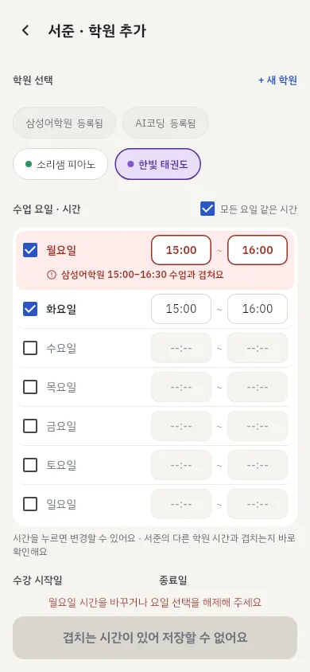
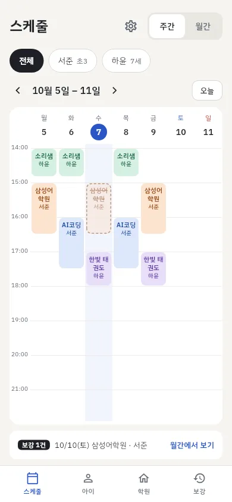
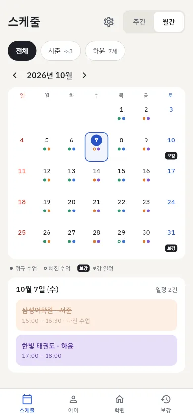
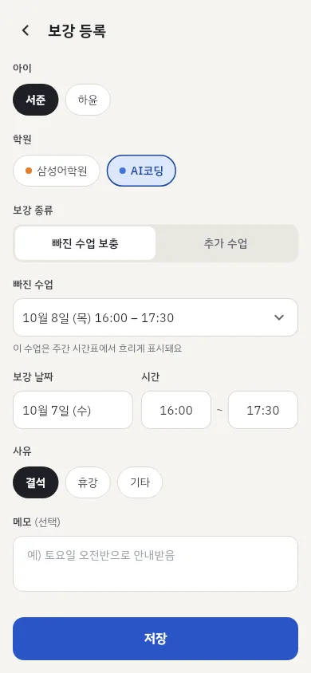
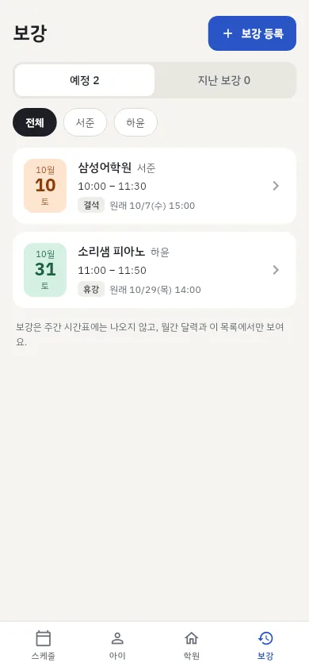

아이타임 사용 설명서
아이타임은 여러 자녀의 학원 시간표·보강·학원비 결제일을 한 폰에서 관리하는 앱이에요. 처음이라면 시작하기의 세 단계만 따라 하면 시간표가 채워져요.
1. 시작하기
아래 화면 하단에 스케줄 · 아이 · 학원 · 보강 탭이 있어요. 순서대로 세 가지만 하면 돼요.
① 아이 등록
- 아이 탭 → 오른쪽 위 아이 등록.
- 이름(애칭도 괜찮아요)을 쓰고 학교(유치원·초등·중등·고등)와 학년을 골라요. 유치원은 나이를 골라요.
- 저장.
아이타임은 이름과 학년(나이)만 받아요. 생년월일·주소·사진은 묻지 않아요.
② 학원 등록
- 학원 탭 → 신규 등록.
- 학원명, 과목, 시간표에 쓸 색상(8가지)을 골라요. 전화번호와 메모(셔틀 시간 등)는 선택이에요.
- 저장.
③ 아이에게 학원 추가
- 아이 탭에서 아이 카드의 + 학원 추가.
- 다니는 학원을 골라요. 학원이 목록에 없으면 + 새 학원으로 바로 만들 수 있어요.
- 수업 요일을 체크하고 시작·끝 시간을 눌러 정해요. 요일마다 시간이 다르면 모든 요일 같은 시간 체크를 풀고 요일별로 바꿔요.
- 수강 시작일(필수)과 종료일(선택)을 정해요.
- 아래 학원비 결제를 채우고(4장) 저장.

시간이 겹치면 저장할 수 없어요. 같은 아이의 다른 학원 수업과 시간이 겹치는 요일에 "AI코딩 16:00–17:30 수업과 겹쳐요"처럼 표시돼요. 그 요일 시간을 바꾸거나 체크를 풀면 저장돼요. 한 수업이 끝나는 시각에 다음 수업이 시작하는 건 겹침이 아니에요.
2. 시간표 보기
스케줄 탭이 앱을 열면 처음 보이는 화면이에요. 오른쪽 위에서 주간과 월간을 바꿔요.


주간
- 위의 전체 · 아이 이름을 눌러 보고 싶은 아이만 골라요.
- ‹ ›로 주를 옮기고, 오늘로 이번 주로 돌아와요.
- 처음엔 오후 2시부터 보여요. 위아래로 밀면 아침 7시~밤 11시까지 볼 수 있어요.
- 두 아이 수업이 같은 시간에 있으면 칸을 나눠 나란히 보여줘요.
- 수업 블록을 누르면 수업 정보가 뜨고, 거기서 이 수업 보강 등록이나 수강 수정으로 갈 수 있어요.
- 흐리고 점선·취소선인 블록은 보강으로 빠진 수업이에요. 보강 자체는 주간에 그리지 않고, 아래 보강 n건 줄로 알려줘요. 그 줄을 누르면 월간으로 가요.
월간
- 일요일부터 시작하는 달력이에요. 날짜 아래 점이 그날의 정규 수업(학원 색)이에요.
- 속이 빈 점은 빠진 수업, 검은 보강 배지는 그날 보강이 있다는 뜻이에요.
- 날짜를 누르면 아래에 그날 일정(정규 수업 + 보강)이 시간순으로 나와요.
3. 보강 관리
- 보강 탭 → 보강 등록. (주간 블록을 눌러 이 수업 보강 등록으로 들어오면 빠진 수업이 미리 채워져요.)
- 아이와 학원을 골라요.
- 종류를 골라요.
- 빠진 수업 보충 — 결석·휴강으로 빠진 수업을 고르면(최근 4주 ~ 앞으로 4주), 그 수업은 주간 시간표에서 흐리게 표시돼요. 사유(결석·휴강·기타)도 골라요.
- 추가 수업 — 원래 수업 없이 학원이 따로 잡은 수업이에요. 주간 시간표는 그대로예요.
- 보강 날짜와 시간, 메모를 넣고 저장.


보강 시간이 그날 그 아이의 다른 수업과 겹치면 노란 경고가 나와요. 학원이 정한 보강은 어쩔 수 없을 때가 있어서 경고만 하고 저장은 돼요.
보강 목록은 예정과 지난 보강으로 나뉘고, 아이별로 골라 볼 수 있어요. 카드를 누르면 수정하거나 삭제할 수 있어요.
4. 학원비와 결제일 알림
설정하기
학원비는 아이에게 학원을 추가(또는 수정)하는 화면의 학원비 결제에서 정해요.
| 항목 | 뜻 |
|---|---|
| 결제 주기 | 1개월마다 또는 3개월마다 |
| 결제일 | 매달 며칠에 내는지(1~31일). 그 달에 없는 날(예: 2월 31일)은 그 달 말일로 계산해요. |
| 마지막 결제일 | 가장 최근에 낸 날. 이걸 기준으로 다음 결제일을 계산해 보여줘요. |
| 결제일 알림 | 새 수강은 꺼져 있어요. 켜면 다음 결제일 당일, 고른 시간(오전 8시·9시·낮 12시·오후 8시·직접 입력)에 알림이 와요. |
상태 보기와 결제 완료
학원 탭에서 아이별 학원비 상태를 봐요. 아이 탭 카드에도 같은 상태가 나와요.
- 2일 지남 미결제 결제일이 지났어요
- 오늘 결제일 오늘이 결제일이에요
- D-3 7일 안에 결제일이에요
- 결제 완료 다음 결제일까지 여유가 있어요
학원비를 냈으면 결제 완료를 눌러요. 결제 기록이 남고 다음 결제일이 주기만큼 넘어가며, 알림도 새 결제일로 다시 맞춰져요. 위쪽 노란 줄은 오늘이거나 지난 학원비가 몇 건인지 알려줘요.
알림 권한
처음으로 알림을 켠 수강을 저장할 때(또는 백업을 가져올 때) 휴대폰이 알림 허용을 물어요. 허용을 눌러야 알림이 와요. 나중에 바꾸려면 설정의 알림 권한에서 설정 열기를 눌러요.
5. 학원에 전화하기
학원 탭의 학원 카드에 있는 전화 버튼을 누르면 전화 앱이 그 번호로 열려요. 전화번호를 넣지 않은 학원은 버튼이 보이지 않아요.
6. 수정하고 삭제하기
- 아이·학원 — 카드의 ⋯ 버튼 → 수정 / 삭제.
- 수강(아이의 학원) — 아이 탭에서 학원 줄을 누르면 수정 화면이 열려요. 오른쪽 위 휴지통으로 삭제해요.
- 보강 — 보강 카드를 눌러 수정, 오른쪽 위 휴지통으로 삭제해요.
7. 새 폰으로 옮기기 (백업)
아이타임은 서버가 없어서 데이터가 지금 폰에만 있어요. 폰을 바꾸거나 앱을 다시 설치하기 전에 백업 파일을 만들어 두세요.
내보내기 (지금 폰)
- 스케줄 탭 오른쪽 위 톱니바퀴 → 설정.
- 백업 내보내기 → 공유 창에서 저장할 곳을 골라요(카카오톡 나에게 보내기, 메일, 드라이브, 파일 저장 등).
aitime_backup_날짜.json파일이 만들어져요.
가져오기 (새 폰)
- 새 폰에 아이타임을 설치하고 백업 파일을 받아 둬요.
- 설정 → 백업 가져오기 → 파일을 골라요.
- "현재 데이터를 모두 바꿔요" 확인 창에서 바꾸기.
백업 파일에는 아이 이름과 학원·일정·학원비 정보가 들어 있어요. 믿을 수 있는 곳에만 보관하세요.
8. 설정
스케줄 탭 오른쪽 위 톱니바퀴로 들어가요.
- 백업 내보내기 · 가져오기 — 7장
- 알림 권한 — 지금 알림이 허용됐는지 보여주고, 꺼져 있으면 휴대폰 설정으로 가는 버튼이 있어요.
- 정확한 시간에 알림(안드로이드) — 휴대폰의 알람 및 리마인더 허용 여부를 보여줘요. 꺼져 있으면 허용하기를 눌러 켜 주세요. 알림을 켠 수강을 저장할 때도 한 번 안내해요.
- 알림이 제때 오게 하기(안드로이드) — 배터리 사용이 "최적화"면 알림이 늦어질 수 있어요. 앱 정보 열기 → 배터리 → 제한 없음.
- 광고 개인정보 옵션 — 동의가 필요한 지역(유럽 등)에서만 보여요. 맞춤 광고 동의를 바꿀 수 있어요.
- 개인정보처리방침 · 사용 설명서 — 이 사이트로 연결돼요.
- 앱 버전 · 오픈소스 라이선스
9. 자주 묻는 질문
결제일 알림이 안 와요.
① 설정 → 알림 권한이 허용됨인지 확인해 주세요. ② 그 수강의 결제일 알림이 켜져 있는지 확인해 주세요. ③ 삼성 등 일부 안드로이드 폰은 배터리를 아끼려고 쓰지 않는 앱을 재워, 알림을 앱을 열 때까지 미뤄요. 아이타임 설정의 정확한 시간에 알림에서 허용하기를 눌러 알람 및 리마인더를 켜 주세요. 그래도 늦으면 알림이 제때 오게 하기에서 앱 정보 열기 → 배터리 → 제한 없음으로 바꿔 주세요. (휴대폰 설정 › 애플리케이션 › 아이타임 › 배터리에서도 바꿀 수 있어요.) ④ 휴대폰을 껐다 켰다면 아이타임을 한 번 열어 주세요. 앱을 열 때 알림을 다시 예약해요.
알림이 정한 시간보다 늦게 와요.
안드로이드는 알람 및 리마인더가 허용돼 있어야 정한 시간에 정확히 알려요. 아이타임 설정 → 정확한 시간에 알림에서 허용하기를 눌러 켜 주세요 (휴대폰 설정 › 애플리케이션 › 아이타임 › 알람 및 리마인더에서도 켤 수 있어요. 안드로이드 14 이상은 처음에 꺼져 있어요). 꺼져 있으면 휴대폰이 배터리를 아끼려고 알림 시각을 모아서 보내 보통 몇 분, 길게는 1시간 가까이 늦을 수 있어요(오래된 안드로이드는 더 늦을 수 있어요). 이때도 아이타임을 가끔 열면 그때마다 알림을 다시 맞춰서 결제일이 가까울수록 더 정확해져요.
결제일 전에 미리 알려줄 수는 없나요?
지금은 결제일 당일 알림 한 번이에요. 학원 탭에서 7일 전부터 D-7 같은 표시로 미리 볼 수 있어요.
같은 학원에 두 아이가 다녀요.
학원은 한 번만 등록하고, 아이마다 + 학원 추가로 연결하세요. 시간과 학원비를 아이별로 따로 정할 수 있어요.
방학이라 학원을 잠깐 쉬어요.
수강 수정에서 종료일을 정하면 그날 이후로 시간표에서 빠져요. 다시 다니면 종료일을 지우세요.
배우자 폰에서도 보고 싶어요.
실시간 공유는 없어요. 백업 파일을 보내 상대 폰에서 가져오면 같은 내용을 볼 수 있어요(가져오면 상대 폰의 기존 데이터는 바뀌어요).
광고를 없앨 수 있나요?
지금은 광고 제거 기능이 없어요. 광고는 탭 화면 아래 배너 하나뿐이고, 입력하는 화면과 설정에는 나오지 않아요.
아이폰에서 "추적을 허용할까요?"라고 물어요.
처음 실행할 때 한 번, 맞춤 광고에 광고 식별자를 써도 되는지 묻는 아이폰 기본 창이에요. 어느 쪽을 골라도 앱 기능은 똑같아요 — 허용하지 않으면 맞춤형이 아닌 광고가 나와요. 나중에 바꾸려면 아이폰 설정 → 개인정보 보호 및 보안 → 추적에서 바꿔요.
그 밖의 문의: fready.shin@gmail.com